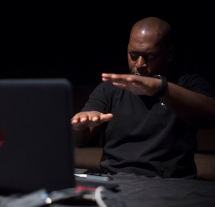
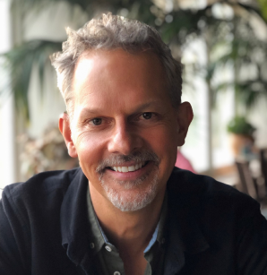

Filmmakers
Rashaad Newsome
Director Rashaad Newsome is a NYC-based multidisciplinary artist whose work blends several practices—including collage, sculpture, film, music, computer programming, and performance—to form an altogether new field. Using the diasporic tradition of improvisation, he crafts compositions that speak of and to Black and Queer culture and walk the tightrope between intersectionality, social practice and abstraction. Newsome was born in New Orleans and received a BFA in Art History from Tulane University. He has exhibited and performed in museums, institutions, and festivals internationally including The Studio Museum in Harlem, The National Museum of African American History and Culture, The Whitney Museum, and the Centre Georges Pompidou. Newsome has created 12 films which have been acquired by numerous institutions including the Los Angeles County Museum of Art and SFMOMA. His many honors include a 2019 LACMA Art and Technology Grant, a 2019 BAVC MediaMaker Fellowship, and a 2018 William Penn Foundation Grant.

Johnny Symons
Director/Producer Johnny Symons (Director/Producer) is an Emmy-nominated filmmaker with 25 years experience creating award-winning LGBTQ documentaries. His film DADDY and PAPA (2002) was nominated for the Sundance Grand Jury Prize, aired on PBS’ Independent Lens and garnered 12 festival awards. His other feature documentaries include BEYOND CONCEPTION (2006, Discovery Channel), ASK NOT (2008, PBS/Independent Lens) and OUT RUN (2016, Full Frame Premiere, PBS/DocWorld). He is co-producer of the Academy Award-nominated LONG NIGHT’S JOURNEY INTO DAY (2000, HBO, Sundance Grand Jury Prize). Symons’ work has screened in 300+ international film festivals and for Congress at the US Capitol. He has been a Fellow at the Sundance Institute’s Documentary Film Program, and received support from ITVS, IFP/HBO, Catapult, Sundance, and Tribeca. Symons graduated with honors from Brown University and has a master’s in documentary production from Stanford. He is Associate Professor and Coordinator of the Documentary Program at San Francisco State University.
